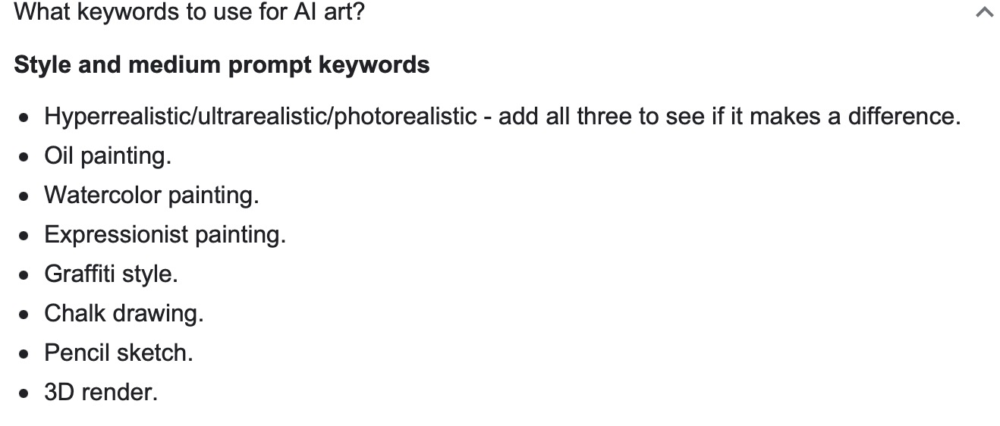
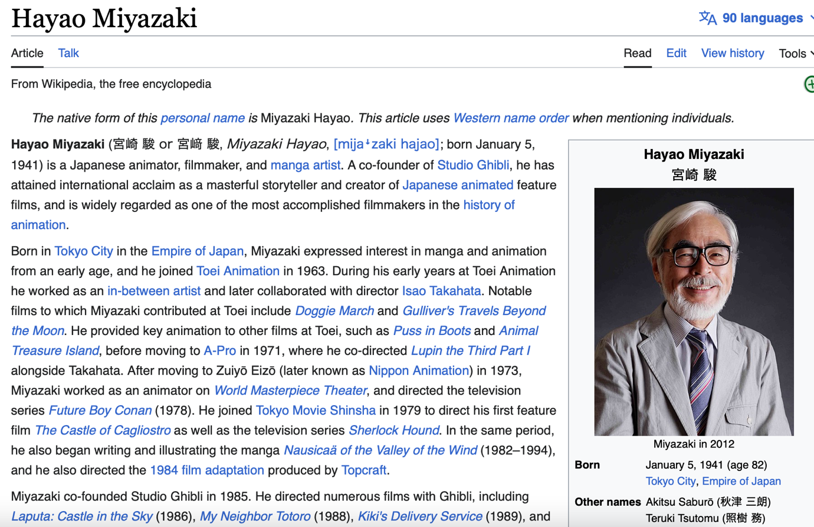
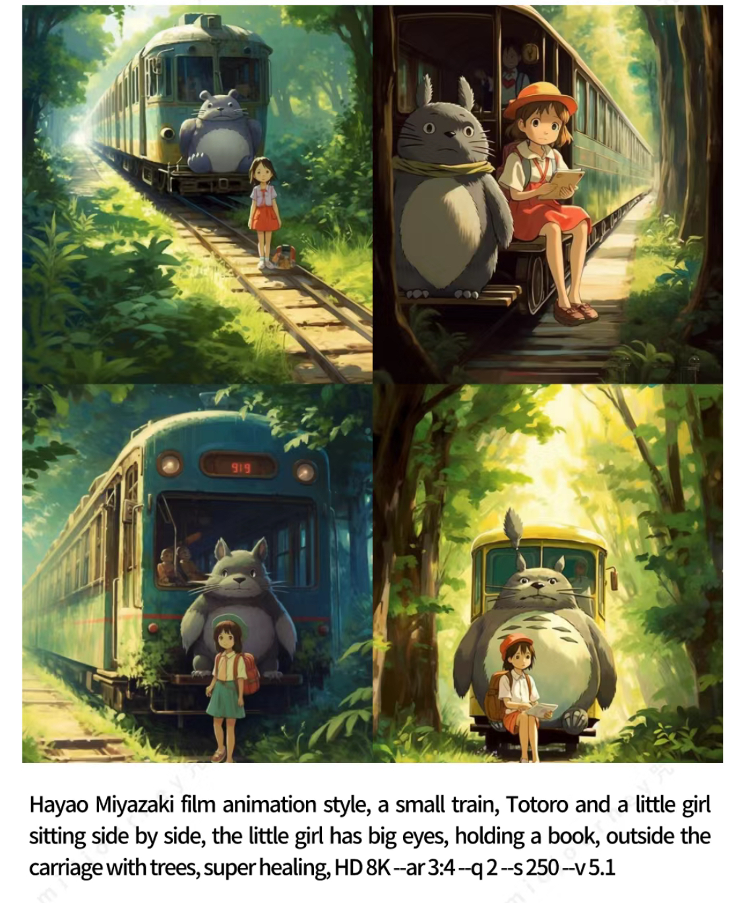
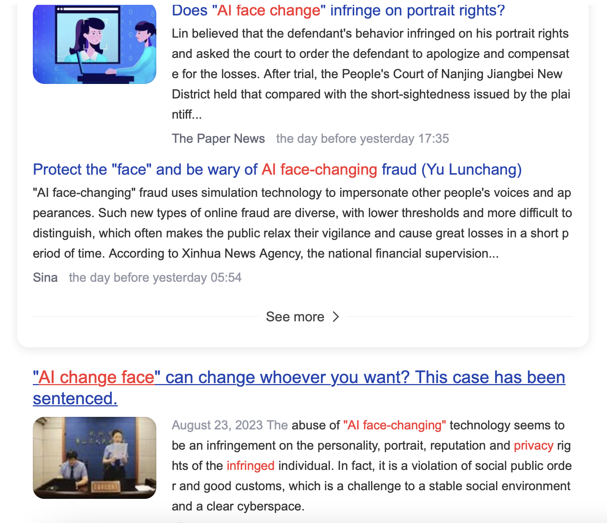
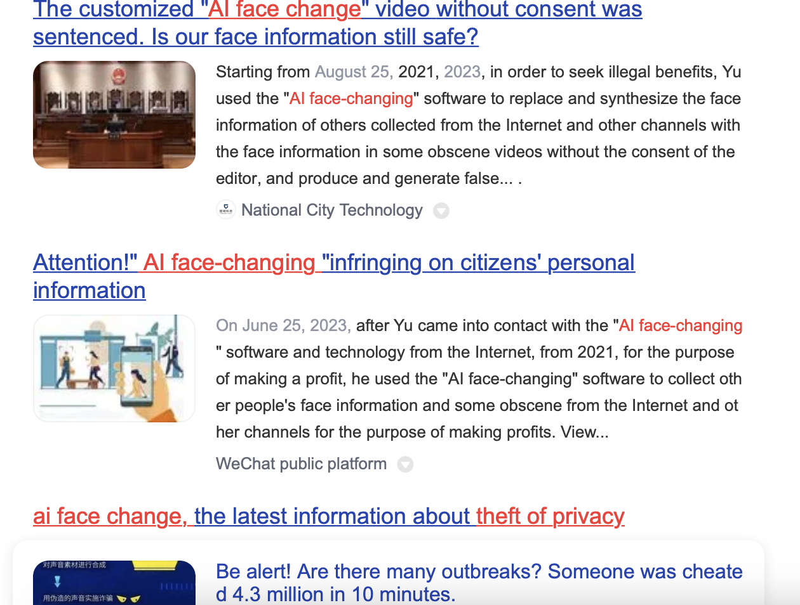

Moon Light
Explore
To begin this essay, I first need to explain what a posthuman is. The concept of "posthuman" was developed by postmodern theorist Ihab Hassan (1977), who offered a ground-breaking definition of the concept of "posthuman" in "Prometheus as Performer: Towards a Posthumanism Culture? He presented a seminal definition of the concept of "posthuman" in "Prometheus as Performer: Towards a posthumanism Culture?".
Braidotti (2013. The Posthuman.) considers possible future changes in human identity and social structures in the context of technological and biological transformations, and at the same time provokes reflection and reassessment of human identity and social structures. He argues that biological, technological, and philosophical changes are leading to dramatic changes in our identity and social structure, thus ushering in a new era in human evolution. This era should be the "post-human society".
Post-human society means a range of topics such as the interaction between humans and machines, bioengineering, and the potential consequences of human evolution. The concept deals with the future development of human and technological integration, one aspect of which is the integration of humans and technology, while the other aspect is the era of machines replacing humans. The post-human society is a future concept that seeks to portray the consequences of the interaction of culture and technology. (Thacker, E. (2003).)
The term "post-human society" covers many different topics and issues, including the interaction between humans and machines, the evolution of identity, bioengineering, artificial intelligence, and the potential consequences of human evolution. (Lee, J. (2016).) This concept is a response of anthropologists to the interaction of technology, society, and culture, and it is in line with the traditional anthropological goal of exploring human identity and cultural change. Until today, the meaning of the term "posthuman society" has been recognised as covering a wider range of topics, such as virtual reality, artificial intelligence, the ethics of science and technology, and human gene editing. This concept has fostered interdisciplinary research and sparked many debates on how technology affects human beings. In this paper, I will explore some of the artistic controversies behind paintings about artificial intelligence based on the framework of posthuman philosophy and posthumanism.
Since the birth of modernity, human beings have gradually established the image of a unique subject, and everything else seems to have been driven into the field of objects. In the 20th century, this imbalance has caused serious ecological problems and triggered a reflection that continues to this day. Philosophers like martin Heidegger pointed the finger at technology, He thinks that The latter has formed a mount that threatens all things (enflaming/Gesell) (Martin Heidegger, The Question Concerning Technology and Other Essay s, New York&London: Haper&Row, 1977,p.24). But precisely because of the development of technology, the human subject has received another kind of challenge - the emergence of non-human agents (computers and new types of artificial intelligence). With the emergence of non-human agents, a wave of challenges to the human subject appeared. This is a new change. The image of human beings as subjects is challenged, and posthumanism perspectives and ideas are gradually integrated into life. For example, humans are no longer the main labour force and creativity, and non-human agents - computers - can do most of the work for humans. (Bowden, S. (2015).)
While the shift between humans and computers is far from complete (as moving agents of the world), its impact extends to the realm of aesthetics. In recent years, the impact and market power brought by artificial intelligence in art creation has gradually occupied the mainstream. Lev Manovich sees human beings as one of the sources of life force, the creative driving force among other forces. But it is not very special in the sense of transcendence, escape or representation. He noted that "ai art is the kind of art that humans cannot create due to limitations imposed by the body, brain, and other constraints," with a unique systematic algorithmic aesthetic characteristic. (Manovich, L. (2011)) At the same time, some people believe that the birth of artificial intelligence is natural and an inevitable result of the operation of the world. In addition, the emergence of artificial intelligence art has made art progress, and human art has reached a new height. Artificial intelligence can produce different painting styles to achieve unpredictable artistic results (Kurt, D. E. (2018).). This is a new and innovative art for human beings.
This kind of artistic result comes from the integration of artificial intelligence into the artistic process. This is a new form of cooperation between man and machine. Powered by the vast databases of computers and the complex neural networks of humans, AI algorithms have the ability to create works of art that challenge conventional notions of creativity. (Chen, W., Shidujaman, M., Jin, J., & Ahmed, S. U. (2020).) But in this process, the key factors of electronic labour and digital rights for human artists are often overlooked. For example, the US Copyright Office and author Jason Allen’s Space Opera case happened some time ago. (Kevin Roose, (3, 2022), "Futureproof: 9 Rules for Humans in the Age of Automation." Section B, pp.1))
On September 5, 2023, the U.S. Copyright Office finally ruled that Space Opera, submitted by game designer Jason Allen, was not protected by intellectual property rights, citing that too much of the work was created by machines and not enough was created by humans. Jason Allen applied for copyright several times beginning in September 2022, sending a written explanation to the Copyright Office detailing how he used Midjourney to create the work, using at least 624 text hints and input modifications. And how he used Photoshop to modify flaws in the original image, using Gigapixel Al to increase the size and resolution of the picture. The United States Copyright Office agreed that parts of Jason Allen's Photoshop modifications constituted original work, but other parts could not be copyrighted. In the context of AI art, Jason Allen, as the result of a collaborative effort shared between human artists and machine algorithms, challenges traditional ways of attributing copyright, raising questions about how the legal system can adapt to recognize and protect the contributions of human and AI creators.
Jason Allen's collaborative artwork with an artificial intelligence was only partially protected by IP rights, and after three appeals he still did not get the copyright protection he wanted. Jason Allen's digital labour is recognised, but the parts he 'feeds' to the AI are still not recognised as his work. This is because the art created by computers and AIs (non-human intelligences) at this stage is in fact a massive rip-off of the life's work of other human artists. Take Van Gogh for example. His magnificent psychedelic paintings are now available by simply typing "Van Gogh painting" into an AI. Artificial intelligence and computers can imitate and recreate the works of human artists by downloading them on the Internet. Today, a group of very tech-savvy artists and photographers are moving away from Level 3 panic as far as AI image generators are concerned. In a passive, third-person hypothetical way, they are worried that other people or they themselves might lose their work. Gerrt Images, the premier agency that sells stock photos and illustrations for design and editorial use, has already banned AI-generated images, and certain artists posting their work on deviant art are asking for a similar ban. Some artists have asked for a similar ban, isolating them from "real" art. In addition to this, some artists want to ensure that their work is not used to train AI. For example, renowned Chinese illustrator Rei, who graduated from the School of the Art Institute of Chicago and studied visual communication design, has been listed on“ Pixiv“ a number of times, which is a testament to her drawing prowess. She said in her own Weibo (China's social platform app) "ai for me there is a sense of cheapness, ai painting to see more in the long term will be substantial to all the visual sense of value, even if it is a very gorgeous picture will have the first reaction of "this thing is not worth the money", the painting The market will soon collapse." As well as well-known Japanese painter Yoneyama Mai on her Twitter account (@yoneyyamai) on 17 February 2023 explicitly disallowed the use of ai to train her painting generation model, to which she accurately replied "no".
But because most traditional copyright laws nowadays, such as that of the United States in the Space Opera case, are designed for human creation, i.e., humans as the central subject. (Ginsburg, J. C. (2002).) It is difficult to accommodate works created by humans in collaboration with AI, let alone AI databases that may contain works by other artists without copyright.
The complexity of AI-generated artworks blurs the boundaries of traditional copyright and challenges established legal frameworks and ethics. (Watiktinnakorn, C., Seesai, J., & Kerdvibulvech, C. (2023).) The first is the impossibility of defining how much of the author's creativity and personal style is actually present in the final work that consists of the integration of a huge database. Determining the rightful owner of these creations becomes a problem, exacerbated by the use of artificial intelligence to "tune" the author of the artwork and the author's electronic labour. (Gillotte, J. L. (2019).)
The lack of clarity in the current legal framework poses a significant obstacle to the burgeoning AI fine art industry. Ownership disputes loom large, threatening to stifle innovation and hinder the growth of this dynamic industry. The urgent need to address these challenges has prompted calls for innovative solutions to accommodate the collaborative nature of AI fine art creation. (Birnhack, M. D. (2001). )
In addition to those who see AI-generated paintings as little more than database calculations and large repositories of plagiarised work fused with the work of others, there is also a school of thought that emphasises the crucial role of the human artist and argues that AI paintings are the true essence of what they are. For example, Holz, the creator of Midjonrney, said in an interview for a Kelly article that "a big part of the whole use of the software is basically art therapy" These ai-generated images aren't really attractive in a general sense, but in the context of what's going on in people's lives, they're meant to be attractive in a very profound way. attractive in a very profound way. " (Kelly, K. (2022, November 17).)
Posthumanism challenges the anthropocentric underpinnings of humanist thinking, arguing for integration and celebrating species diversity, (Susen, S. (2022). ) But it does not negate the pressing issues surrounding digital rights and electronic labour within the field of the human artist. When we look at the process of creating art with AI, it becomes clear that labour-intensive aspects such as crafting algorithms, curating extensive datasets and refining the final output rely heavily on human expertise and artistic thought.
However, this collaborative project is not without controversy, and it raises a number of e-labour issues. One prominent issue is the undervaluing of the effort put in by human artists compared to machine-generated results (e.g. the case of Space Opera). The complex contribution of human creativity is in danger of being overlooked in the wake of advances in AI, which highlights the need to address issues that arise in the process of human-machine collaboration.
Artificial intelligence undoubtedly represents the present and future of artistic creation, and its continued development is inextricably linked to the ongoing ingenuity of human artists.
The symbiotic relationship between humans and AI is critical to the continued development of both fields. As we explore this intersection, it is clear that denying or diminishing the role of the human artist would jeopardise the very essence of artistic creation. For essentially, AI may be a transformative force, but it cannot develop without the ongoing inspiration and intelligence of human artists.
Recognising the enduring importance of human artistic contributions in the realm of AI-generated art is essential to promoting the harmonious coexistence and innovative development of organic and digital art. (Williams, B. (2021).)
REFERENCE LISR
Birnhack, M. D. (2001). The idea of progress in copyright law. Buff. Intell. Prop. LJ, 1, 3.
Bowden, S. (2015). Human and Nonhuman Agency in Deleuze. In Palgrave Macmillan UK eBooks (pp. 60–80). https://doi.org/10.1057/9781137453693_5
Chen, W., Shidujaman, M., Jin, J., & Ahmed, S. U. (2020). A methodological approach to create interactive art in artificial intelligence. In HCI International 2020–Late Breaking Papers: Cognition, Learning and Games: 22nd HCI International Conference, HCII 2020, Copenhagen, Denmark, July 19–24, 2020, Proceedings 22 (pp. 13-31). Springer International Publishing.
Gillotte, J. L. (2019). Copyright infringement in ai-generated artworks. UC Davis L. Rev., 53, 2655.
Ginsburg, J. C. (2002). The concept of authorship in comparative copyright law. DePaul L. Rev., 52, 1063.
Kurt, D. E. (2018). Artistic creativity in artificial intelligence.
Kevin Roose,(3, 2022）, “Futureproof: 9 Rules for Humans in the Age of Automation.” Section B, pp.1)
Kelly, K. (2022, November 17). What AI-Generated art really means for human creativity. WIRED. https://www.wired.com/story/picture-limitless-creativity-ai-image-generators/
Lee, J. (2016). Cochlear implantation, enhancements, transhumanism and posthumanism: some human questions. Science and Engineering Ethics, 22, 67-92.
Martin Heidegger, The Question Concerning Technology and Other Essays, New York&London: Haper&Row, 1977,p.24
Manovich, L. (2011). Trending: The promises and the challenges of big social data. Debates in the digital humanities, 2(1), 460-475.
Rosi Braidotti. (2013). The Posthuman. Polity.
Susen, S. (2022). Reflections on the (post-) human condition: Towards new forms of engagement with the world?. Social Epistemology, 36(1), 63-94.
Thacker, E. (2003). Data made flesh: Biotechnology and the discourse of the posthuman. Cultural Critique, (53), 72-97.
Watiktinnakorn, C., Seesai, J., & Kerdvibulvech, C. (2023). Blurring the lines: how AI is redefining artistic ownership and copyright. Discover Artificial Intelligence, 3(1), 37.
Williams, B. (2021). Painting by numbers: copyright protection and AI-generated art. Eur. Intellect. Prop. Rev.
In the age of advanced artificial intelligence and automation, the line between humans and machines is becoming increasingly blurred. Some believe that there will be no humans after computers, envisioning a world where machines surpass humans in all fields. However, there is a fascinating intersection of human creativity and technological innovation in this (post)digital paradigm that challenges this notion: the digital labour of human painters behind AI paintings and the question of copyright for human painters.
In a world where AI algorithms create breathtaking works of art, one might question the raison d'etre of human artists. After all, AI can replicate styles and create stunning visuals with mathematical precision. But underneath the mesmerising canvas of AI art lies the complex work of human painters who shape and guide these digital tools.
These human painters are not just technicians, they are artists themselves. They train the AI models, infusing them with their own creativity, aesthetics, and emotions. They provide the algorithms with data, curate the inputs, and tweak the parameters to achieve the desired output. This collaboration between humans and machines blurs the line between creator and creation, allowing us to question what it really means to be human in this (post)digital age.
At the same time, with the use of digital strokes comes the question of copyright ownership. Who owns AI-generated artwork? Is it the AI that represents the pinnacle of computational achievement, or is it the creative vision and labour of human painters that created the AI's capabilities? Or is it the sum of the styles set by classic master painters over the course of a lifetime?
The answer lies in recognising the humanistic concerns that permeate AI painting. While AI can mimic artistic styles and produce stunning visual effects, it is still a tool - a vessel through which human intent is communicated. Without human intervention, AI paintings regularly suffer from the "Valley of Terror effect," proving that AI lacks the inherent creativity, emotion, and subjective experience of human art.
On 5 September 2023, the U.S. Copyright Office finally ruled that the work submitted by game designer Jason Allen, The Space Opera House, was not protected by intellectual property rights, on the grounds that there were too many parts of the work created by machines and not enough parts belonging to human creativity.
This is the third time that the U.S. Copyright Office has denied Jason Allen's application, and the decision is final.
Jason Allen plans to file a lawsuit against the U.S. federal government. Rebecca Tushnet, a professor at Harvard Law School and a leading copyright scholar, commented on the decision.
Tushnet, a professor at Harvard Law School and a leading copyright scholar, commented on the decision, saying that it is consistent with previous precedent that intellectual property protection is for human authors.
In 2001, British outdoor photographer Slater accidentally obtained a selfie of a macaque monkey during a visit to North Sulawesi National Park in Indonesia. The photo was then spun by several media outlets around the world and set off a copyright battle between Wikipedia and Slater. Slater claims he owns the copyright to the photo, but Wikipedia says no one owns the copyright because it was taken by a monkey!
The U.S. Copyright Office published a 1,222-page report on U.S. federal copyright law stating that monkeys are not protected by intellectual property rights.
In 2015 People for the Ethical Treatment of Animals (PETA) in the United States filed a lawsuit against Slater, arguing that the copyright should go to the monkey.In 2018, the US Court of Appeals for the Ninth Circuit ruled that animals could not be sued in the name of copyright protection. The monkey, and indeed all animals, lack legal standing under the Copyright Act because they are not human.
Several flat every country's intellectual property protection is tied to human authors.
Returning to the Space Opera case, Jason Allen filed multiple copyright applications beginning in September 2022, sending a written explanation to the Copyright Office detailing how he used Midjourney to create this work, using at least 624 text prompts and typed changes. and how he used Photoshop to modify flaws in the original image and Gigapixel Al to increase the size and resolution of the image.
The U.S. Copyright Office agrees that the parts Jason Allen modified using Photoshop constitute an original work of authorship, but the rest cannot be copyrighted.
Humans can stagnate aesthetic development if they rely too heavily on AI, the law is ultimately all about protecting the continued long-term beneficial development of society, and with regards to copyright and plagiarism, AI is actually better regulated than humans. In the backend of the computer, all the data is clear and unambiguous. Existing AI algorithms dictate that it is a large plagiarism tool in its own right. There is a lag in the revision of laws. AI papers can now be counter-detected using a variety of software, then the problem of AI mapping infringement will also be solved by humans. ai in a sense makes regulation easier.
AI works of the value of the problem is needless to say, once the picture can be loaded casually, everyone can paint through the AI, then the value of the art picture will no longer exist, not conducive to the circulation of the economy, and will disappear one day. The painting industry will also come to an end from then on. There will be no more works of human painters, and AI will not be able to progress.
on the above thinking, my personal suggestion theme is to hopefully create software that can identify AI works, regulate and protect the copyright and labour of human painters. The digital labour of human painters should be recognised and rewarded. (Copyright should belong firmly to them, after ensuring that their creative contributions are protected and respected) The digital paradigm does not make human creators obsolete, but rather emphasises their role as stewards of innovation.
Recognising human painters as the rightful owners of AI-generated artwork reinforces the importance of the human element in the (post)digital era. It emphasises our ability to live in harmony, collaborate and innovate with, rather than be made obsolete by, advanced technologies.


This is my favorite Japanese cartoonist, who has been sticking to hand-painted works all his life, and his painting style has become the most classic Japanese animation style.
But now, just by typing "mysterious spells" into the ai software, he can replicate the painting style and persistence he has spent his life creating.

People don't even need to learn the code, just need to enter the image keyword information to get the finished product.
At the same time, the news that ai modifies pictures and infringes the rights and interests of ordinary people is also increasing


reference list：
Gillotte, J. L. (2019). Copyright infringement in ai-generated artworks. UC Davis L. Rev., 53, 2655.
O’Meara, J., & Murphy, C. (2023). Aberrant AI creations: co-creating surrealist body horror using the DALL-E Mini text-to-image generator. Convergence, 29(4), 1070-1096.
Lucchi, N. (2023). ChatGPT: A Case Study on Copyright Challenges for Generative Artificial Intelligence Systems. European Journal of Risk Regulation, 1-23.
Iancu, D. M. Mr. Andrei Iancu, Under Secretary of Commerce for Intellectual Property and Director of the United States Patent and Trademark Office RE: Request for Comments on Intellectual Property Protection for Artificial Intelligence Innovation (Federal Registry Notice 84 FR 58141).
Paquette, L. (2021). Artificial life imitating art imitating life: copyright ownership in ai-generated works. Intellectual Property Journal, 33(2), 183-215.
https://www.nytimes.com/2022/09/02/technology/ai-artificial-intelligence-artists.html Kevin Roose sept.2.2022
yuanb@uni.coventry.ac.uk